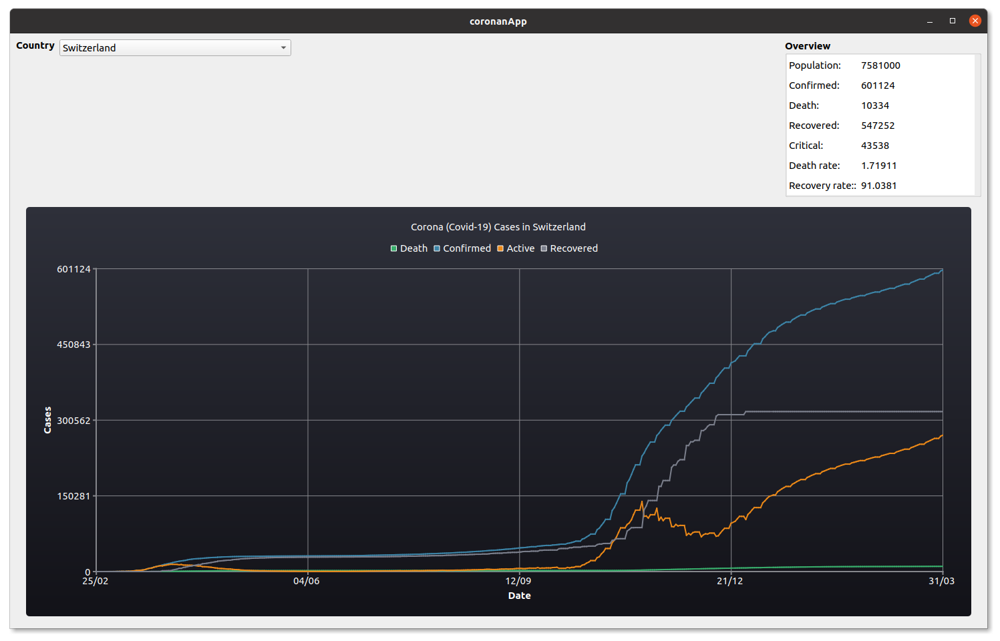

Documentation for Co[ro]nan
Co[ro]nan is an example C++17 Qt project using conan and CMake. It reads the current data of Corona (Covid-19) cases for a country from the The About Corona Covid-19 API.
The About Corona Covid-19 provides statistics via REST API from The World Health Organization Situation Reports, Johns Hopkins CSSE, The U.S. Department of Health & Human Services, The National Health Commission of the People’s Republic of China, The European Centre for Disease Prevention and Control, and China CDC Weekly.
Development
To build the project you need python and a recent conan version:
#> pip install conan
Further a recent version of CMake (> 3.15), a modern C++ compiler (C++17) and Qt with QtCharts must be installed.
How to build
You have the following options to build the project
Use build script:
In a linux shell you can build the project with the provided build.sh script. E.g. to build in folder build execute:
#> ./build.sh build
See ./build.sh -h for more options
CMake:
You can also build it yourself using CMake:
cmake < 3.20
#> mkdir build
#> (cd build && cmake ..)
#> cmake --build build
cmake >= 3.20
#> cmake -S . --preset=linux-ninja
#> cmake --build -S . --preset=ninja-debug
or any other CMakePresets.
Source Code formatting
For source code formatting clang-format for C++ files and cmake-format for the CMake files are used. Run format_source_files.sh to format all C++ and CMake files.
Note: Delete the build directory before formatting, otherwise all CMake files in the build folder will be formatted as well, what may take a while.
CMake options
ENABLE_TESTING: Build (and run) unittests. _Default_:`ON`ENABLE_BUILD_WITH_TIME_TRACE: Enable Clang Time Trace Feature. Default: ```OFF```ENABLE_PCH: Enable Precompiled Headers. Default: ``OFF``ENABLE_CACHE: Enable caching if available, e.g. ccache or sccache. Default: ``ON``ENABLE_COVERAGE: Enable coverage reporting for gcc/clang. Default: ```OFF```ENABLE_DOXYGEN: Enable doxygen documentation build (doxygen with graphviz dot must be installed). Default: ```ON```ENABLE_SANITIZER_ADDRESS: Enable address sanitizer. Default: ```OFF```ENABLE_SANITIZER_LEAK: Enable leak sanitizer. Default: ```OFF```ENABLE_SANITIZER_UNDEFINED_BEHAVIOR: Enable undefined behavior sanitizer. Default: ```OFF```ENABLE_SANITIZER_THREAD: Enable thread sanitizer. Default: ```OFF```ENABLE_SANITIZER_MEMORY: Enable memory sanitizer. Default: ```OFF```ENABLE_IPO: Enable Interprocedural Optimization, aka Link Time Optimization (LTO). Default: ```OFF```ENABLE_CPPCHECK: Enable static analysis with cppcheck. Default: ``ON`` if cppcheck is installed ``OFF`` otherwise.ENABLE_CLANG_TIDY: Enable static analysis with clang-tidy. Default: ``ON`` if clang-tidy is installed ``OFF`` otherwise.ENABLE_INCLUDE_WHAT_YOU_USE: Enable static analysis with include-what-you-use. Default: ``ON`` if include-what-you-use is installed ``OFF`` otherwise.ENABLE_CONAN_BUILD_ALL: Enable building all conan requires from source. May help if you get linking errors. *Default:OFF
Pre-Commit Hooks
The following Pre-commit-hooks are used to check and format files before commiting:
check-added-large-files: Prevent giant files (> 500kB) from being committed.fix-byte-order-marker: Forbid files which have a UTF-8 byte-order markercheck-case-conflict: Check for files with names that would conflict on a case-insensitive filesystem like MacOS HFS+ or Windows FAT.check-merge-conflict: Check for files that contain merge conflict strings.check-symlinks: Checks for symlinks which do not point to anything.check-yaml: Attempts to load all yaml files to verify syntax.check-json: Attempts to load all json files to verify syntax.check-toml: Attempts to load all TOML files to verify syntax.check-executables-have-shebangs: Checks that non-binary executables have a proper shebang.end-of-file-fixer: Makes sure files end in a newline and only a newline.mixed-line-ending: Replaces or checks mixed line ending.trailing-whitespace: Trims trailing whitespace in markdownclang-format: Format C++ files using clang-formatcmake-format: Format CMake files using cmake-formatyamllint: Linter for yaml filesyamlfmt: Format yaml files
Please install pre-commit hooks before commiting any code.
direnv & Nix
If you have direnv and nix installed everything should be setup to start upon entering the project folder. gcc (gcc10) is set as default C and C++ compiler. If you prefare clang (clang_11) change it in .envrc
When using nix. The most resent cmake is available and therefore configure and build CMakePresets can be used.